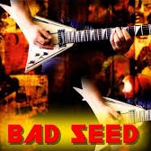

Metallica Albums S&M Album Master Of Puppets The Memory Remains No Leaf Clover Metallica Album Enter Sandman Nothing Else Matters Where Ever I MayRoam Master Of Puppets Album Battery Damage The Thing That Should Not Be Reload Album  Bad Seed Fuel The Unforgiven 2